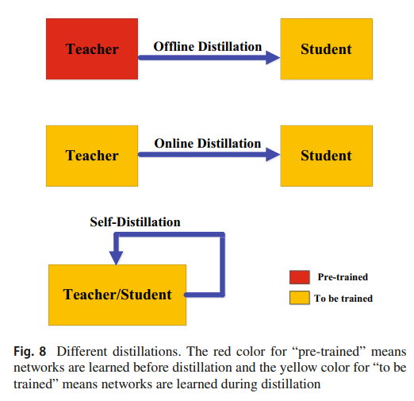
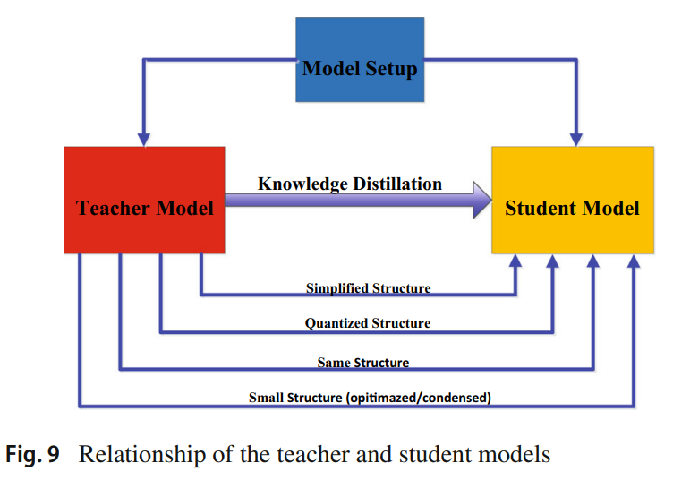

Knowledge Distillation review - Distillation Scheme & Teacher–Student Architecture
Knowledge Distillation에 대해 정리한 survey 논문 리뷰
Knowledge Distillation model (KD model)의 목적을 간략히 설명하면 large scale model(teacher model)을 KD model을 통해 small scale model(student model)로 압축(compression)하여 파라미터를 최적화 시키는 것
이번 페이지에서는 아래와 같은 내용을 정리할 것
- small scale model에게 knowledge를 옮길 때 어떠한 방식(Distillation Scheme)으로 student model을 학습시키는지
- 전이되는 knowledge의 퀄리티를 결정하는 Teacher and Student networks의 구조
Distillation Schemes

※ 이러한 3가지의 Distillation Scheme은 서로를 보완하기 위해서 합쳐서 사용될 때도 있음
Offline Distillation
main idea 잘 학습된 모델(knowledgeable teacher)가 작은 모델(student)을 특성을 match시키거나 분포를 match시키는 방향으로 학습 진행
Offline Distillation 진행 순서
1. large teacher model을 training set를 사용하여 훈련시킴
2. 학습된 teacher model을 사용해 knowledge를 logits 또는 중간층의 feature 형태로 추출하고 이를 통해 student model 학습
단점 student model의 성능을 결국 teacher model의 성능을 따르게 되는데 좋은 성능의 teacher model은 복잡하고 용량이 커서 학습에 오랜시간이 걸린다.
Online Distillation
main idea large-scale model(teacher model)과 small scale model(student model)을 동시에 학습을 시키는 것으로 Offline Distillation에서 complex high-capacity teacher model이 필요하다는 단점을 극복하기 위해 만들어진 기법
- Online Distillation은 one-phase end-to-end 구조를 띄고 있다는 장점이 잇지만
example of Online Distillation
- 일반화 성능을 높이기 위해서는 ensemble of soft logits을 사용하여 deep mutual learning을 확장시킴
- 연산량을 줄이기 위해서는 각 branch는 student model을 나타내고 different branch는 같은 backbone network를 공유하는 multibracnh architecture를 제안함
※ 고용량의 teacher model을 Online 환경에서 다루지 못하여 Online 환경에서 teacher model과 student model의 관계를 파악하는 것이 흥미로운 주제임
Self-Distillation
main idea 작은 모델(student)이 스스로 학습을 하는 것으로 같은 network를 teacher model과 student model이 사용한다.
+ Online Distillation의 특별한 case로 여겨질 수 있음
example of Self-Distillation
- Snapshot distillation은 self-distillation의 특별한 이형으로 초기 에포크의 네트워크 knowledge가 teacher model이 되어 마지막 부분의 에포크의 네트워크에게 knowledge를 전달하는 구조
- feature embedding space에 있는 데이터 유사도를 반영하는 기법
- class-wise self-knowledge distillation은 학습된 모델의 intra-class samples의 결과 분포와 augmented samples의 결과 분포를 match시키는 기법
Teacher–Student Architecture

structure of student model
- teacher network를 layer와 channel의 수를 줄임으로 간략하게 표현한 구조 - 구조가 보존되는 teacher network의 quantized version
양자화(quantized)란, 모델에 사용되는 파라미터를 특정 비트로 줄여서 모델의 크기를 줄여 inference time을 줄이는 효과를 냄
- 효율적인 기본 과정을 낼 수 있는 small network
- small network with optimized global network structure ?
- teacher model과 같은 구조
example of T-S Architecture
- training gap을 줄이기 위해 보조 teacher model, residual learning 제안됨 - 구조적 차이를 줄이기 위해 student model의 구조를 teacher 모델의 small or qunatized version으로 구축
- 여러 개의 layer를 하나의 layer로 압축 - block-wise knowledge transfer ? - 요즘은 Depth-wise separable convolution를 통해 모델 경량화를 진행